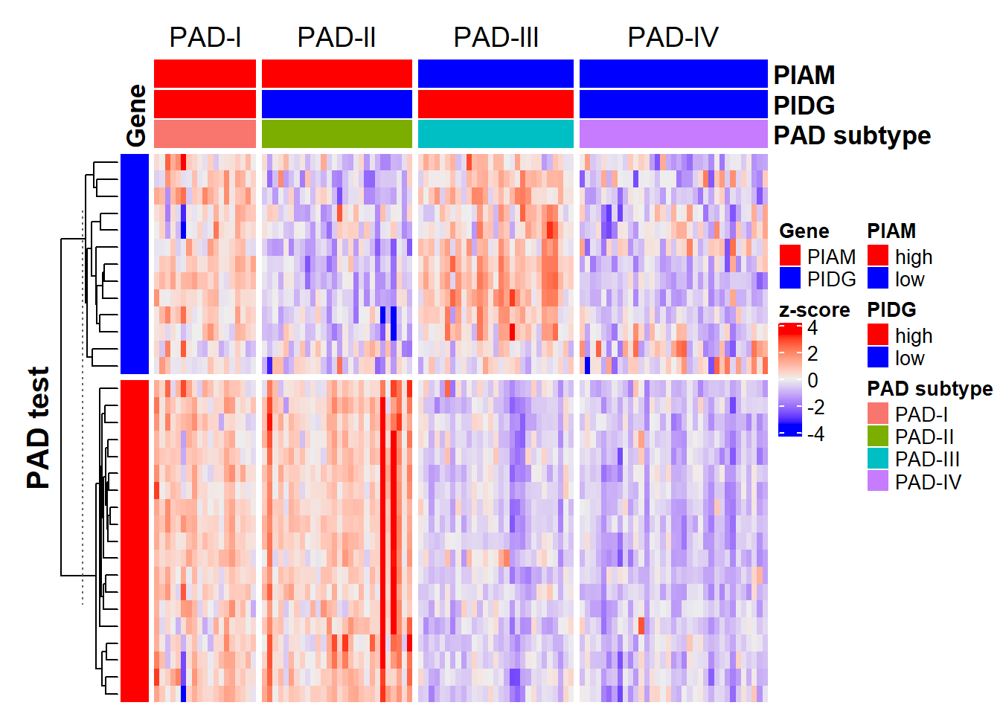

Chapter 3 Quick start
3.1 About
- Although with bright prospects in Pan-disease analysis, GSClassifier was primarily developed for clinic-friendly immune subtypes of gastric cancer (GC). Currently, only
PADsubtypes andPADifor GC were supported. We would try to support more cancer types in the future as possible. More details in Plans in the future section. - Gibbs'
PanCancer immune subtypesbased on five gene signatures (485 genes) could also be called inGSClassifier, with a pre-trained model from the ImmuneSubtypeClassifier package. If you use their jobs, please cite: references. - Particularly, all normal tissues should be eliminated before subtypes calling for cancer research.
3.2 Data
To lower the learning cost of GSClassifier, we provides some test data:
library(GSClassifier)
# 载入需要的程辑包：luckyBase
testData <- readRDS(system.file("extdata", "testData.rds", package = "GSClassifier"))Explore the testData:
names(testData)
# [1] "Kim2018_3" "PanSTAD_phenotype_part" "PanSTAD_expr_part"3.3 PAD
3.3.1 Preparation of the test data
load phenotype data:
design <- testData$PanSTAD_phenotype_part
table(design$Dataset)
#
# GSE13861 GSE13911 GSE15459 GSE22377 GSE26899 GSE26901 GSE29272 GSE51105
# 65 39 192 43 96 108 134 94
# GSE54129 GSE57303 GSE62254 GSE65801 GSE84437 TCGA-STAD
# 111 70 300 32 433 372load target sample IDs in GSE54129 cohort:
target_ID <- design$ID[design$Dataset %in% 'GSE54129']
expr <- testData$PanSTAD_expr_part[,target_ID]
head(expr[,1:10])
# GSM1308413 GSM1308414 GSM1308415 GSM1308416 GSM1308417
# ENSG00000122122 7.888349 7.623663 6.873493 6.961102 7.150572
# ENSG00000117091 7.051760 6.217445 5.651839 5.830996 5.908532
# ENSG00000163219 6.056472 5.681844 5.411533 5.652684 5.555147
# ENSG00000136167 9.322191 8.765794 8.502315 8.838166 8.845952
# ENSG00000005844 7.119594 6.023631 5.400999 6.172863 6.059838
# ENSG00000123338 7.204051 6.925328 6.259809 6.610681 6.595882
# GSM1308418 GSM1308419 GSM1308420 GSM1308421 GSM1308422
# ENSG00000122122 7.871423 6.953329 8.334037 6.764335 6.522554
# ENSG00000117091 6.526917 5.646446 6.617520 5.637693 5.742848
# ENSG00000163219 5.962885 5.361763 5.975842 5.330428 5.172705
# ENSG00000136167 9.366074 8.675718 9.118517 8.614068 8.114096
# ENSG00000005844 6.523530 6.129181 7.331588 5.547059 5.867118
# ENSG00000123338 6.699790 6.935390 7.050288 6.536710 6.2002693.3.2 Unsupervised clustering
res_pad <- PAD(
expr = expr,
cluster.method = "ward.D2",
extra.annot = NULL,
plot.title = 'PAD test',
subtype = "PAD.train_20220916",
verbose = T
)
# Use default PIAM...
# Use default PIDG...
# Gene match: 100%.
# Done!3.3.3 Of note
It’s strongly recommanded that the gene type of
exprshould be alway the same, such as ENSEMBL genes (ENSG00000111640 for GAPDH, for examples).PADfunction is only for datasets with lots of samples for its classification depends on population-based unsupervised clusting.PADis population-dependent and non-personalized.Beta characteristics: You could try random forest classification based on the
randomForestpackage or methods instats::hclust.
3.4 PADi
In
GSClassifier,PADiis a pre-trained out-of-the-box model for GC personalized PAD subtypes calling.During the sutype calling, the gene rank relations based on individuals instead of the relative values across samples would be used. Thus, you don’t have to do batch normalization even though the data (the
Xinput) come from multiple cohorts or platform.More limitations were discussed in our paper that you had better know.
In this section, we would showed how to use PADi series: PADi, callEnsemble, and parCallEnsemble functions.
3.4.1 Preparation of the test data
X <- testData$Kim2018_3
head(X)
# PB-16-002 PB-16-003 PB-16-004
# ENSG00000121410 0.07075272 -2.08976724 -1.43569557
# ENSG00000148584 -1.49631022 -0.23917056 0.94827471
# ENSG00000175899 -0.77315329 0.52163146 0.91264015
# ENSG00000166535 -0.28860715 -0.45964255 -0.38401295
# ENSG00000256069 -0.25034243 0.06863867 0.14429081
# ENSG00000184389 0.08215945 -0.05966481 0.049379243.4.2 Use a specific function called PADi
Very simple, just:
Check the result:
head(res_padi)
# SampleIDs BestCall BestCall_Max 1 2 3 4
# 1 PB-16-002 4 4 0.023372779 0.02631794 0.04864784 0.3336484
# 2 PB-16-003 4 4 0.007271698 0.08650742 0.01974812 0.9530730
# 3 PB-16-004 4 4 0.011559768 0.02922151 0.09018894 0.8649045Actually, PADi is exactly based on a general function called callEnsemble.
3.4.3 Use the callEnsemble function
Also simple, just:
Check the result:
head(res_padi)
# SampleIDs BestCall BestCall_Max 1 2 3 4
# 1 PB-16-002 4 4 0.01338872 0.01624520 0.03965218 0.8052567
# 2 PB-16-003 4 4 0.04709511 0.08833681 0.03879361 0.6244038
# 3 PB-16-004 4 4 0.01389035 0.03638009 0.05852707 0.69804383.4.4 Parallel strategy for PADi
Sometimes, the number of patients for subtype callings could be huge (hundreds or even tens of thousands). Thus, the parallel computing (Windows or Linux pass; not tested in Mac or other OS) was also developed in the current version of
GSClassifierpackage.The parameter
numCoreswas used to control the No. of CPU for computing (which depends on your CPU capacity).
# No run for the tiny test data. With errors.
# Method 1:
res_padi <- PADi(X = X, verbose = F, numCores = 4)
# Method 2:
res_padi <- parCallEnsemble(
X = X,
ens = NULL,
geneAnnotation = NULL,
geneSet = NULL,
scaller = NULL,
geneids = 'ensembl',
subtype = 'PAD.train_20220916',
verbose = T,
numCores = 4)3.4.5 Single sample subtype calling
In clinical practice, the single sample subtype calling might be one of the most common scenarios and is also supported by functions of PADi series.
Supposed that there is a GC patient, its information should be:
X_ind <- X[,1]; names(X_ind) <- rownames(X)
head(X_ind)
# ENSG00000121410 ENSG00000148584 ENSG00000175899 ENSG00000166535 ENSG00000256069
# 0.07075272 -1.49631022 -0.77315329 -0.28860715 -0.25034243
# ENSG00000184389
# 0.08215945Or it can also be another format:
X_ind <- as.matrix(X[,1]); rownames(X_ind) <- rownames(X)
head(X_ind)
# [,1]
# ENSG00000121410 0.07075272
# ENSG00000148584 -1.49631022
# ENSG00000175899 -0.77315329
# ENSG00000166535 -0.28860715
# ENSG00000256069 -0.25034243
# ENSG00000184389 0.08215945Similar to multiples sample calling, just:
check the result:
head(res_padi)
# SampleIDs BestCall BestCall_Max 1 2 3 4
# 1 target 4 4 0.02337278 0.02631794 0.04864784 0.3336484Similarly, there is alternative choice:
Check the result:
head(res_padi)
# SampleIDs BestCall BestCall_Max 1 2 3 4
# 1 target 4 4 0.01338872 0.0162452 0.03965218 0.80525673.4.6 Of note
In the results of
PADi, two types of subtypes (BestCallandBestCall_Max) were integrated.BestCallwas predicted based on a xgboost-trained model based on prior knowlege ofPADsubtypes and the possibility matrix (columns 4 to 7 of four-subtype calling, for example), whileBestCall_Maxwas predicted via maximum strategy. You should use THE SAME ONE in a specific practice no matter which one you use.PADiis individual-dependent and personalized, which means that the result of subtype calling would not be influenced by the data of others.
3.5 Use external models from luckyModel package
In the future, there might be lots of models available as a resource of GSClassifier, such as luckyModel. Here we show how luckyModel support GSClassifier.
First, intall and load luckyModel:
# Install luckyModel
if (!requireNamespace("luckyModel", quietly = TRUE))
devtools::install_github("huangwb8/luckyModel")
library(luckyModel)Check projects supported in current luckyModel:
list_project()
# [1] "GSClassifier"Check available models in the project:
list_model(project='GSClassifier')
# Available models in GSClassifier:
# *Gibbs_PanCancerImmuneSubtype_v20190731
# *HWB_PAD_v20200110Here, HWB_PAD_v20200110 is a standard name of PADi. They are exactly the same.
Taking PADi as an example, we here show how to use an external model from luckyModel. First, load a model:
model <- lucky_model(project = 'GSClassifier',
developer='HWB',
model = 'PAD',
version = 'v20200110')Then, check the gene id type:
model$geneSet
# $PIAM
# [1] "ENSG00000122122" "ENSG00000117091" "ENSG00000163219" "ENSG00000136167"
# [5] "ENSG00000005844" "ENSG00000123338" "ENSG00000102879" "ENSG00000010671"
# [9] "ENSG00000185862" "ENSG00000104814" "ENSG00000134516" "ENSG00000100055"
# [13] "ENSG00000082074" "ENSG00000113263" "ENSG00000153283" "ENSG00000198821"
# [17] "ENSG00000185811" "ENSG00000117090" "ENSG00000171608"
#
# $PIDG
# [1] "ENSG00000116667" "ENSG00000107771" "ENSG00000196782" "ENSG00000271447"
# [5] "ENSG00000173517" "ENSG00000134686" "ENSG00000100614" "ENSG00000134247"
# [9] "ENSG00000109686" "ENSG00000197321" "ENSG00000179981" "ENSG00000187189"
# [13] "ENSG00000140836"The model should use ensembl as the value of geneid parameter in callEnsemble series.
Next, you can use the model like:
Or just:
They are exactly the same.
Finally, check the result:
head(res_padi)
# SampleIDs BestCall BestCall_Max 1 2 3 4
# 1 PB-16-002 4 4 0.023372779 0.02631794 0.04864784 0.3336484
# 2 PB-16-003 4 4 0.007271698 0.08650742 0.01974812 0.9530730
# 3 PB-16-004 4 4 0.011559768 0.02922151 0.09018894 0.86490453.6 PanCancer immune subtypes
GSClassifier could also call the PanCancer immune subtypes of Gibbs’.
First, see data available in current GSClassifier:
GSClassifier_Data()
# Available data:
# Usage example:
# ImmuneSubtype.rds
# PAD.train_20200110.rds
# PAD.train_20220916.rds
# PAD <- readRDS(system.file("extdata", "PAD.train_20200110.rds", package = "GSClassifier"))
# ImmuneSubtype <- readRDS(system.file("extdata", "ImmuneSubtype.rds", package = "GSClassifier"))Let’s use our test data to do this:
X <- testData$Kim2018_3
symbol <- convert(rownames(X))
rownames(X) <- symbol
X <- X[!is.na(symbol),]
dim(X)
# [1] 19118 3Have a check
head(X)
# PB-16-002 PB-16-003 PB-16-004
# A1BG 0.07075272 -2.08976724 -1.43569557
# A1CF -1.49631022 -0.23917056 0.94827471
# A2M -0.77315329 0.52163146 0.91264015
# A2ML1 -0.28860715 -0.45964255 -0.38401295
# RP11-118B22.6 -0.25034243 0.06863867 0.14429081
# A3GALT2 0.08215945 -0.05966481 0.04937924PanCan Immune Subtype callings:
Check the result:
head(res_pis)
# SampleIDs BestCall BestCall_Max 1 2 3
# 1 PB-16-002 2 2 5.617172e-04 0.561300665 5.580930e-06
# 2 PB-16-003 4 4 6.725528e-07 0.018167170 2.115721e-04
# 3 PB-16-004 3 3 7.499267e-06 0.001126488 3.221018e-01
# 4 5 6
# 1 0.1781836078 0.010365332 0.005009102
# 2 0.4497534335 0.002455097 0.002685032
# 3 0.0003545679 0.006895948 0.008964154Also, you can try to use luckyModel:
pci <- lucky_model(
project = "GSClassifier",
model = "PanCancerImmuneSubtype",
developer = "Gibbs",
version = "v20190731"
)PanCan Immune Subtype callings:
Finally, we take a look at the PanCancer immune subtypes model:
ImmuneSubtype <- readRDS(system.file("extdata", "ImmuneSubtype.rds", package = "GSClassifier"))
names(ImmuneSubtype)
# [1] "ens" "scaller" "geneAnnotation" "geneSet"Its gene annotation:
head(ImmuneSubtype$geneAnnotation)
# SYMBOL ENTREZID ENSEMBL
# 235 ACTL6A 86 ENSG00000136518
# 294 ADAM9 8754 ENSG00000168615
# 305 ADAMTS1 9510 ENSG00000154734
# 322 ADAR 103 ENSG00000160710
# 340 ADCY7 113 ENSG00000121281
# 479 AIMP2 7965 ENSG00000106305Its gene sets:
ImmuneSubtype$geneSet
# $LIexpression_score
# [1] "CCL5" "CD19" "CD37" "CD3D" "CD3E" "CD3G" "CD3Z" "CD79A" "CD79B"
# [10] "CD8A" "CD8B1" "IGHG3" "IGJ" "IGLC1" "CD14" "LCK" "LTB" "MS4A1"
#
# $CSF1_response
# [1] "CORO1A" "MNDA" "CCRL2" "SLC7A7" "HLA-DMA" "FYB"
# [7] "RNASE6" "TLR2" "CTSC" "LILRB4" "PSCDBP" "CTSS"
# [13] "RASSF4" "MSN" "CYBB" "LAPTM5" "DOCK2" "FCGR1A"
# [19] "EVI2B" "ADCY7" "CD48" "ARHGAP15" "ARRB2" "SYK"
# [25] "BTK" "TNFAIP3" "FCGR2A" "VSIG4" "FPRL2" "IL10RA"
# [31] "IFI16" "ITGB2" "IL7R" "TBXAS1" "FMNL1" "FLI1"
# [37] "RASSF2" "LYZ" "CD163" "CD97" "CCL2" "FCGR2B"
# [43] "MERTK" "CD84" "CD53" "CD86" "HMHA1" "CTSL"
# [49] "EVI2A" "TNFRSF1B" "CXCR4" "LCP1" "SAMHD1" "CPVL"
# [55] "HLA-DRB1" "C13orf18" "GIMAP4" "SAMSN1" "PLCG2" "OSBPL3"
# [61] "CD8A" "RUNX3" "FCGR3A" "AMPD3" "MYO1F" "CECR1"
# [67] "LYN" "MPP1" "LRMP" "FGL2" "NCKAP1L" "HCLS1"
# [73] "SELL" "CASP1" "SELPLG" "CD33" "GPNMB" "NCF2"
# [79] "FNBP1" "IL18" "B2M" "SP140" "FCER1G" "LCP2"
# [85] "LY86" "LAIR1" "IFI30" "TNFSF13B" "LST1" "FGR"
# [91] "NPL" "PLEK" "CCL5" "PTPRC" "GNPTAB" "SLC1A3"
# [97] "HCK" "NPC2" "C3AR1" "PIK3CG" "DAPK1" "ALOX5AP"
# [103] "CSF1R" "CUGBP2" "APOE" "APOC1" "CD52" "LHFPL2"
# [109] "C1orf54" "IKZF1" "SH2B3" "WIPF1"
#
# $Module3_IFN_score
# [1] "IFI44" "IFI44L" "DDX58" "IFI6" "IFI27" "IFIT2" "IFIT1" "IFIT3"
# [9] "CXCL10" "MX1" "OAS1" "OAS2" "OAS3" "HERC5" "SAMD9" "HERC6"
# [17] "DDX60" "RTP4" "IFIH1" "STAT1" "TAP1" "OASL" "RSAD2" "ISG15"
#
# $TGFB_score_21050467
# [1] "MMP3" "MARCKSL1" "IGF2R" "LAMB1" "SPARC" "FN1"
# [7] "ITGA4" "SMO" "MMP19" "ITGB8" "ITGA5" "NID1"
# [13] "TIMP1" "SEMA3F" "RHOQ" "CTNNB1" "MMP2" "SERPINE1"
# [19] "EPHB2" "COL16A1" "EPHA2" "TNC" "JUP" "ITGA3"
# [25] "TCF7L2" "COL3A1" "CDH6" "WNT2B" "ADAM9" "DSP"
# [31] "HSPG2" "ARHGAP1" "ITGB5" "IGFBP5" "ARHGDIA" "LRP1"
# [37] "IGFBP2" "CTNNA1" "LRRC17" "MMP14" "NEO1" "EFNA5"
# [43] "ITGB3" "EPHB3" "CD44" "IGFBP4" "TNFRSF1A" "RAC1"
# [49] "PXN" "PLAT" "COL8A1" "WNT8B" "IGFBP3" "RHOA"
# [55] "EPHB4" "MMP1" "PAK1" "MTA1" "THBS2" "CSPG2"
# [61] "MMP17" "CD59" "DVL3" "RHOB" "COL6A3" "NOTCH2"
# [67] "BSG" "MMP11" "COL1A2" "ZYX" "RND3" "THBS1"
# [73] "RHOG" "ICAM1" "LAMA4" "DVL1" "PAK2" "ITGB2"
# [79] "COL6A1" "FGD1"
#
# $CHANG_CORE_SERUM_RESPONSE_UP
# [1] "CEP78" "LSM3" "LRRC40" "STK17A" "RPN1" "JUNB"
# [7] "NUP85" "FLNC" "HMGN2" "RPP40" "UQCR10" "AIMP2"
# [13] "CHEK1" "VTA1" "EXOSC8" "CENPO" "PNO1" "SLC16A1"
# [19] "WDR77" "UBE2J1" "NOP16" "NUDT1" "SMC2" "SLC25A5"
# [25] "NUPL1" "DLEU2" "PDAP1" "CCBL2" "COX17" "BCCIP"
# [31] "PLG" "RGS8" "SNRPC" "PLK4" "NUTF2" "LSM4"
# [37] "SMS" "EBNA1BP2" "C13orf27" "VDAC1" "PSMD14" "MYCBP"
# [43] "SMURF2" "GNG11" "F3" "IL7R" "BRIP1" "HNRNPA2B1"
# [49] "DCK" "ALKBH7" "HN1L" "MSN" "TPM1" "HYLS1"
# [55] "HAUS1" "NUP93" "SNRPE" "ITGA6" "CENPN" "C11orf24"
# [61] "GGH" "PFKP" "FARSA" "EIF2AK1" "CENPW" "TUBA4A"
# [67] "TRA2B" "UMPS" "MRTO4" "NUDT15" "PGM2" "DBNDD1"
# [73] "SNRPB" "MNAT1" "NUP35" "TCEB1" "HSPB11" "C19orf48"
# [79] "ID3" "IPO4" "FARSB" "EIF4G1" "SKA1" "MFSD11"
# [85] "PLAUR" "MARVELD2" "MCM3" "DHFR" "RNF41" "ID2"
# [91] "H2AFZ" "CDK2" "NCLN" "ZWILCH" "DYNLT1" "C16orf61"
# [97] "SLC25A40" "RHOC" "CCT5" "PDIA4" "SNRPA" "RBM14"
# [103] "PDLIM7" "PITPNC1" "TPM3" "CORO1C" "ERLIN1" "PAICS"
# [109] "TPRKB" "SKA2" "MYBL1" "SH3BP5L" "BRCA2" "SAR1A"
# [115] "POLR3K" "MRPS28" "NUP107" "TUBG1" "PNN" "FAM167A"
# [121] "RFC3" "MYL6" "MCM7" "MAGOHB" "FAM89B" "TOMM40"
# [127] "CDCA4" "MT3" "MTHFD1" "PSMD12" "MYBL2" "CKLF"
# [133] "NRIP3" "EZR" "C12orf24" "GPLD1" "SRM" "RAB3B"
# [139] "NLN" "MT1F" "TNFRSF12A" "TPI1" "HAS2" "APOO"
# [145] "FBXO41" "MRPL37" "GSTCD" "SDC1" "WDR54" "RNF138"
# [151] "APITD1" "RMND5B" "ENO1" "MAP3K8" "TMEM130" "SNX17"
# [157] "KRR1" "TAGLN" "PA2G4" "RUVBL1" "SNRPD1" "LOXL2"
# [163] "POLE2" "MAPRE1" "IMP4" "EMP2" "PSMD2" "MET"
# [169] "IFRD2" "LMNB2" "PLOD2" "NCEH1" "NME1" "STRA13"
# [175] "ACTL6A" "DLEU1" "SNRPA1" "CBX1" "LYAR" "PTPLB"
# [181] "PFN1" "CENPJ" "COTL1" "SPRYD7" "USPL1" "MRPL12"
# [187] "ADAMTS1" "GLRX3" "WSB2" "MRPS16" "DCLRE1B" "MKKS"
# [193] "C3orf26" "CPEB4" "SPAG17" "MLF1IP" "UAP1" "COQ2"
# [199] "WDHD1" "DCBLD2" "KIAA0090" "SAR1B" "PSMA7" "PSMC3"
# [205] "COPS6" "DUT" "PPIH" "PHF19" "TPM2" "MCTS1"
# [211] "EIF4EBP1" "HNRNPR"Enjoy GSClassifier!